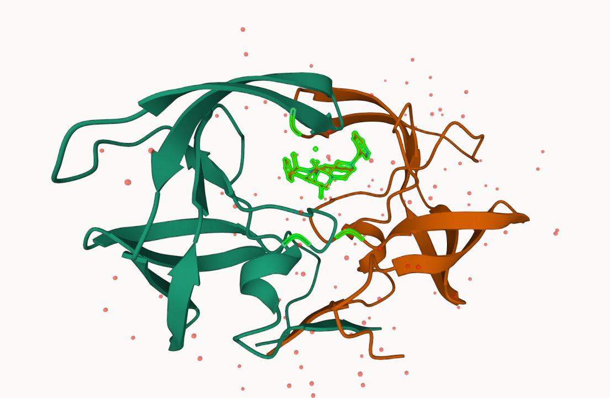

Q1: What percentage of structures in the PDB are solved by X-Ray and Electron Microscopy.
((150417+8586)/171351)*100
[1] 92.79374
Q2: What proportion of structures in the PDB are protein?
Q3: Type HIV in the PDB website search box on the home page and determine how many HIV-1 protease structures are in the current PDB?
2: Visualizing the HIV-1 protease structure
Using Mol* (pronounced molstar) to view PBD structures
Q4: Water molecules normally have 3 atoms. Why do we see just one atom per water molecule in this structure?
The resolution of the image is 2A, but the the hydrogen atoms in the water molecules are smaller than the 2A resolution.
Q5: There is a critical “conserved” water molecule in the binding site. Can you identify this water molecule? What residue number does this water molecule have
Yes, it interacts with residue ILE 50 on the B chain of the protein
Q6: Generate and save a figure clearly showing the two distinct chains of HIV-protease along with the ligand. You might also consider showing the catalytic residues ASP 25 in each chain and the critical water (we recommend “Ball & Stick” for these side-chains). Add this figure to your Quarto document. Discussion Topic: Can you think of a way in which indinavir, or even larger ligands and substrates, could enter the binding site?
While the image shows the protein in a single configuration, proteins are actually moving all the time. The movement of the protein can cause configurations where molecules could enter the binding site.

Q7: [Optional] As you have hopefully observed HIV protease is a homodimer (i.e. it is composed of two identical chains). With the aid of the graphic display can you identify secondary structure elements that are likely to only form in the dimer rather than the monomer?
The dimer is able to form a pocket between the two chains where a molecule can bind.
3. Introduction to Bio3D in R
The ‘bio3d’ package for structural bioinformatics has lots of features for reading and working with biomolecular sequences and structures.
library(bio3d)pdb <-read.pdb("1hsg")
Note: Accessing on-line PDB file
pdb
Call: read.pdb(file = "1hsg")
Total Models#: 1
Total Atoms#: 1686, XYZs#: 5058 Chains#: 2 (values: A B)
Protein Atoms#: 1514 (residues/Calpha atoms#: 198)
Nucleic acid Atoms#: 0 (residues/phosphate atoms#: 0)
Non-protein/nucleic Atoms#: 172 (residues: 128)
Non-protein/nucleic resid values: [ HOH (127), MK1 (1) ]
Protein sequence:
PQITLWQRPLVTIKIGGQLKEALLDTGADDTVLEEMSLPGRWKPKMIGGIGGFIKVRQYD
QILIEICGHKAIGTVLVGPTPVNIIGRNLLTQIGCTLNFPQITLWQRPLVTIKIGGQLKE
ALLDTGADDTVLEEMSLPGRWKPKMIGGIGGFIKVRQYDQILIEICGHKAIGTVLVGPTP
VNIIGRNLLTQIGCTLNF
+ attr: atom, xyz, seqres, helix, sheet,
calpha, remark, call
head(pdb$atom)
type eleno elety alt resid chain resno insert x y z o b
1 ATOM 1 N <NA> PRO A 1 <NA> 29.361 39.686 5.862 1 38.10
2 ATOM 2 CA <NA> PRO A 1 <NA> 30.307 38.663 5.319 1 40.62
3 ATOM 3 C <NA> PRO A 1 <NA> 29.760 38.071 4.022 1 42.64
4 ATOM 4 O <NA> PRO A 1 <NA> 28.600 38.302 3.676 1 43.40
5 ATOM 5 CB <NA> PRO A 1 <NA> 30.508 37.541 6.342 1 37.87
6 ATOM 6 CG <NA> PRO A 1 <NA> 29.296 37.591 7.162 1 38.40
segid elesy charge
1 <NA> N <NA>
2 <NA> C <NA>
3 <NA> C <NA>
4 <NA> O <NA>
5 <NA> C <NA>
6 <NA> C <NA>
Q7: How many amino acid residues are there in this pdb object?
198
Q8: Name one of the two non-protein residues?
MK1
Q9: How many protein chains are in this structure?
2
Predicting functional motions of a single structure
adk <-read.pdb("6s36")
Note: Accessing on-line PDB file
PDB has ALT records, taking A only, rm.alt=TRUE
Normal Mode analysis (NMA) it is a bioinformatics method for predicting functional motions. It will show us the parts of the proteins that are “flexible” (i.e. most dynamic).
m <-nma(adk)
Building Hessian... Done in 0.06 seconds.
Diagonalizing Hessian... Done in 0.61 seconds.
plot(m)
Make a “movie” of this thing moving.
mktrj(m, file="adk_nma.pdb")
4. Comparative analysis of all ADK structures
Setup: Install and load the following packages in the console
structureId chainId macromoleculeType chainLength experimentalTechnique
1AKE_A 1AKE A Protein 214 X-ray
4X8M_A 4X8M A Protein 214 X-ray
6S36_A 6S36 A Protein 214 X-ray
6RZE_A 6RZE A Protein 214 X-ray
4X8H_A 4X8H A Protein 214 X-ray
3HPR_A 3HPR A Protein 214 X-ray
resolution scopDomain pfam
1AKE_A 2.00 Adenylate kinase Adenylate kinase, active site lid (ADK_lid)
4X8M_A 2.60 <NA> Adenylate kinase, active site lid (ADK_lid)
6S36_A 1.60 <NA> Adenylate kinase, active site lid (ADK_lid)
6RZE_A 1.69 <NA> Adenylate kinase, active site lid (ADK_lid)
4X8H_A 2.50 <NA> Adenylate kinase, active site lid (ADK_lid)
3HPR_A 2.00 <NA> Adenylate kinase, active site lid (ADK_lid)
ligandId ligandName
1AKE_A AP5 BIS(ADENOSINE)-5'-PENTAPHOSPHATE
4X8M_A <NA> <NA>
6S36_A CL (3),NA,MG (2) CHLORIDE ION (3),SODIUM ION,MAGNESIUM ION (2)
6RZE_A NA (3),CL (2) SODIUM ION (3),CHLORIDE ION (2)
4X8H_A <NA> <NA>
3HPR_A AP5 BIS(ADENOSINE)-5'-PENTAPHOSPHATE
source
1AKE_A Escherichia coli
4X8M_A Escherichia coli
6S36_A Escherichia coli
6RZE_A Escherichia coli
4X8H_A Escherichia coli
3HPR_A Escherichia coli K-12
structureTitle
1AKE_A STRUCTURE OF THE COMPLEX BETWEEN ADENYLATE KINASE FROM ESCHERICHIA COLI AND THE INHIBITOR AP5A REFINED AT 1.9 ANGSTROMS RESOLUTION: A MODEL FOR A CATALYTIC TRANSITION STATE
4X8M_A Crystal structure of E. coli Adenylate kinase Y171W mutant
6S36_A Crystal structure of E. coli Adenylate kinase R119K mutant
6RZE_A Crystal structure of E. coli Adenylate kinase R119A mutant
4X8H_A Crystal structure of E. coli Adenylate kinase P177A mutant
3HPR_A Crystal structure of V148G adenylate kinase from E. coli, in complex with Ap5A
citation rObserved rFree
1AKE_A Muller, C.W., et al. J Mol Biol (1992) 0.1960 NA
4X8M_A Kovermann, M., et al. Nat Commun (2015) 0.2491 0.3089
6S36_A Rogne, P., et al. Biochemistry (2019) 0.1632 0.2356
6RZE_A Rogne, P., et al. Biochemistry (2019) 0.1865 0.2350
4X8H_A Kovermann, M., et al. Nat Commun (2015) 0.1961 0.2895
3HPR_A Schrank, T.P., et al. Proc Natl Acad Sci U S A (2009) 0.2100 0.2432
rWork spaceGroup
1AKE_A 0.1960 P 21 2 21
4X8M_A 0.2463 C 1 2 1
6S36_A 0.1594 C 1 2 1
6RZE_A 0.1819 C 1 2 1
4X8H_A 0.1914 C 1 2 1
3HPR_A 0.2062 P 21 21 2
Reading PDB files:
pdbs/split_chain/1AKE_A.pdb
pdbs/split_chain/4X8M_A.pdb
pdbs/split_chain/6S36_A.pdb
pdbs/split_chain/6RZE_A.pdb
pdbs/split_chain/4X8H_A.pdb
pdbs/split_chain/3HPR_A.pdb
pdbs/split_chain/1E4V_A.pdb
pdbs/split_chain/5EJE_A.pdb
pdbs/split_chain/1E4Y_A.pdb
pdbs/split_chain/3X2S_A.pdb
pdbs/split_chain/6HAP_A.pdb
pdbs/split_chain/6HAM_A.pdb
pdbs/split_chain/4K46_A.pdb
pdbs/split_chain/4NP6_A.pdb
pdbs/split_chain/3GMT_A.pdb
pdbs/split_chain/4PZL_A.pdb
PDB has ALT records, taking A only, rm.alt=TRUE
.. PDB has ALT records, taking A only, rm.alt=TRUE
. PDB has ALT records, taking A only, rm.alt=TRUE
.. PDB has ALT records, taking A only, rm.alt=TRUE
.. PDB has ALT records, taking A only, rm.alt=TRUE
.... PDB has ALT records, taking A only, rm.alt=TRUE
. PDB has ALT records, taking A only, rm.alt=TRUE
....
Extracting sequences
pdb/seq: 1 name: pdbs/split_chain/1AKE_A.pdb
PDB has ALT records, taking A only, rm.alt=TRUE
pdb/seq: 2 name: pdbs/split_chain/4X8M_A.pdb
pdb/seq: 3 name: pdbs/split_chain/6S36_A.pdb
PDB has ALT records, taking A only, rm.alt=TRUE
pdb/seq: 4 name: pdbs/split_chain/6RZE_A.pdb
PDB has ALT records, taking A only, rm.alt=TRUE
pdb/seq: 5 name: pdbs/split_chain/4X8H_A.pdb
pdb/seq: 6 name: pdbs/split_chain/3HPR_A.pdb
PDB has ALT records, taking A only, rm.alt=TRUE
pdb/seq: 7 name: pdbs/split_chain/1E4V_A.pdb
pdb/seq: 8 name: pdbs/split_chain/5EJE_A.pdb
PDB has ALT records, taking A only, rm.alt=TRUE
pdb/seq: 9 name: pdbs/split_chain/1E4Y_A.pdb
pdb/seq: 10 name: pdbs/split_chain/3X2S_A.pdb
pdb/seq: 11 name: pdbs/split_chain/6HAP_A.pdb
pdb/seq: 12 name: pdbs/split_chain/6HAM_A.pdb
PDB has ALT records, taking A only, rm.alt=TRUE
pdb/seq: 13 name: pdbs/split_chain/4K46_A.pdb
PDB has ALT records, taking A only, rm.alt=TRUE
pdb/seq: 14 name: pdbs/split_chain/4NP6_A.pdb
pdb/seq: 15 name: pdbs/split_chain/3GMT_A.pdb
pdb/seq: 16 name: pdbs/split_chain/4PZL_A.pdb